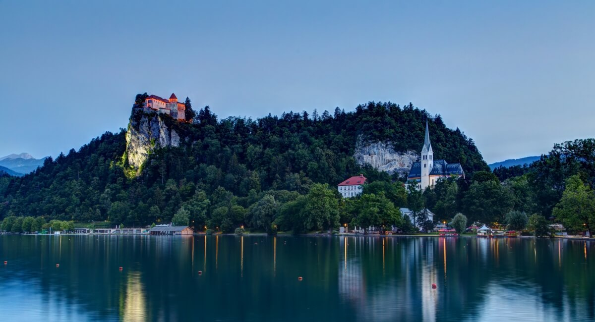
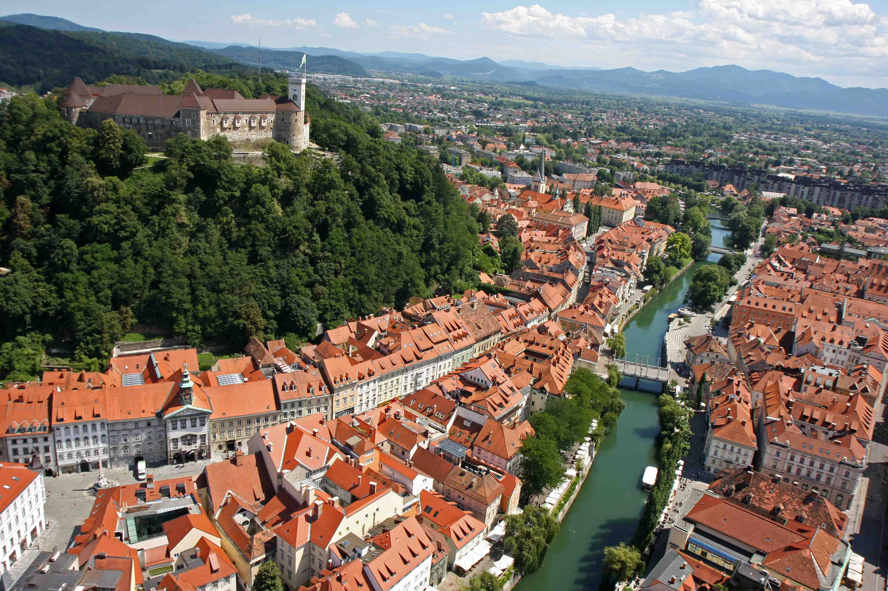

I feel Slovenia
By Ionut Andrei Sacaleanu
An earthly paradise of snow-capped peaks, turquoise-green rivers and Venetian-style coastline, Slovenia enriches its natural treasures with harmonious architecture, charming rustic culture and sophisticated cuisine.
Why hassle with navigating the bus and train schedules from Ljubljana when you can join an affordable, guided tour of Lake Bled from Ljubljana. You’ll enjoy convenient hotel pick-up and be delivered directly to the shores of this picturesque, emerald-green lake on this guided tour of Lake Bled. This small-group tour includes a wooden boat ride to Bled Island and a tour of the clifftop Bled Castle.
Lake Bled
What to expect
- Your half-day tour of Lake Bled begins with a pick-up from your Ljubljana hotel. You’ll travel the hour from Ljubljana to Lake Bled in a comfortable, air-conditioned minivan.
- Upon arrival at Lake Bled, you will have a few moments to take in the peaceful, emerald waters of the lake as you gaze across the lake to spot the Church of the Assumption of Mary perched on an island in the middle of the lake where you’ll soon travel to by boat.
- After a 15-minute ride in a traditional, wooden pletna boat, you’ll have 30 minutes to explore the Bled Island as you wish. Tour the photogenic Our Lady of the Lake church or enjoy a snack in the cafe.
- Next, you’ll journey back to shore for a tour of Bled Castle. The castle was built precariously on the edge of the lake during medieval times and offers stunning panoramic views of Lake Bled from atop the cliff.
- You’ll reconvene with your guide back at the lake where you’ll enjoy some free time for photographs or a quick dip in the lake before hopping into the van for the trip back to your Ljubljana hotel.
Ljunljana Castle
A nice refreshing trip to Lake Bled and Castle
This tour was perfect. Lake Bled was absolutely stunning and a must on everyone's visit to Ljubljana. Our tour Guide Brane was very informative, friendly and we really enjoyed his guidance throughout the tour. We saw all the things that we wanted and more. Especially loved the coffee and Slovenian Creme Cake at the end of a fabulous day.
